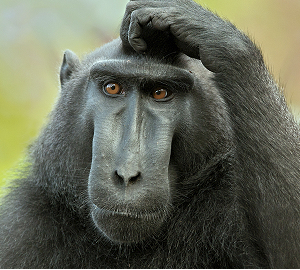

Yurii Batiutenko

Contact Info
Email: ybat2007@outlook.com
Skype: ybat2007
GitHub: YurBat
Summary
My goal is to become a web developer because it is an interesting, creative, and perspective profession. I like it because web development looks like painting or cooking — there is nothing and suddenly you have the little masterpiece.
Skills
I have strong knowledge of HTML, but I have intermediate knowledge of CSS and starter of JavaScript and Git.
I am not ashamed to ask for advice if I can't do my work well.
I able to organize my work time and I always do right on time that work I have to do — without frustration or laziness.
But my strongest skill is interest in the profession and ability to quickly find and absorb information. I am learning new things from everywhere especially when I need it for me.
Code examples
For code examples please see my GitHub profile.
Experience
I have no experience in serious work yet only some markup or coding online tests like www.codewars.com or www.w3schools.com.
Education
I study HTML, CSS and JavaScript using next online-platforms:w3schools.com, sololearn.com, javascript.ru, codewars.com,code-basics.com. I am training to mark up web-pages by performingtasks of www.frontloops.io and www.webref.ru.
I constantly read materials about web-development on some websiteslike www.habr.ru, www.css-live.ru, www.smashing-magazine.com, lessoften on www.css-tricks.com, www.web-standards.ru.
Also, I listen to every week's podcast Web-standards by VadimMakeev and try to watch all interesting for me web developmentconferences on YouTube.
Now I study at Rolling Scopes School.
English
I use online applications to learn English: Duolingo and Memrise
My English skills are not very advanced and being between A2 and B2 level (according to online tests like British Council EnglishScore for example). I can read technical and simple common texts, listen and understand speakers in podcasts or YouTube. I generally understand most words and the sense of the conversation and I can speak by simple words and expressions.
I participated in 2 weeks of English conversation practice at Michael Gott International in 2018.